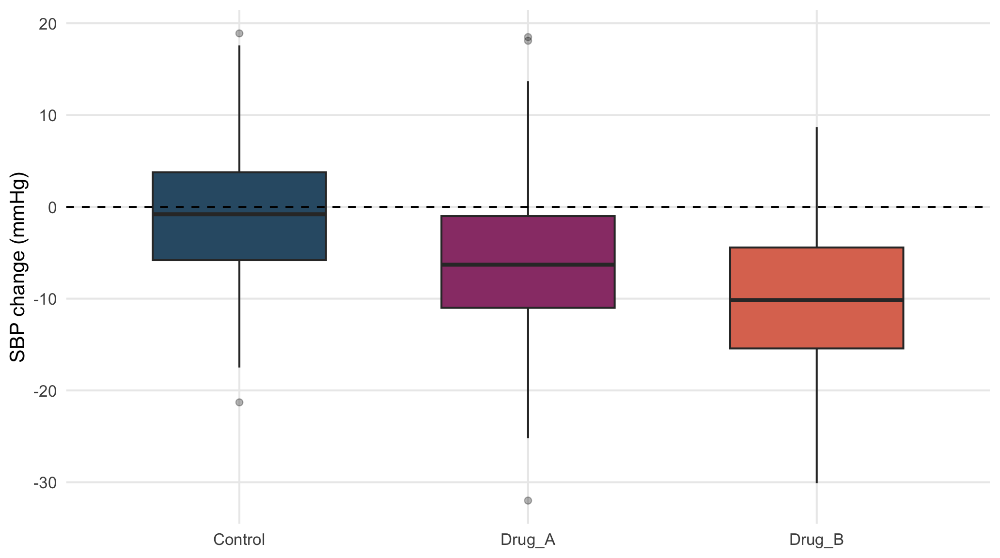
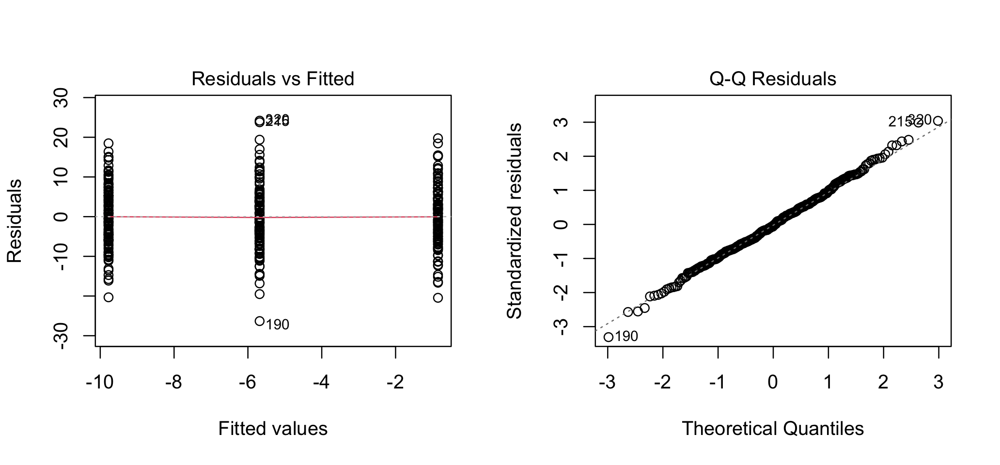
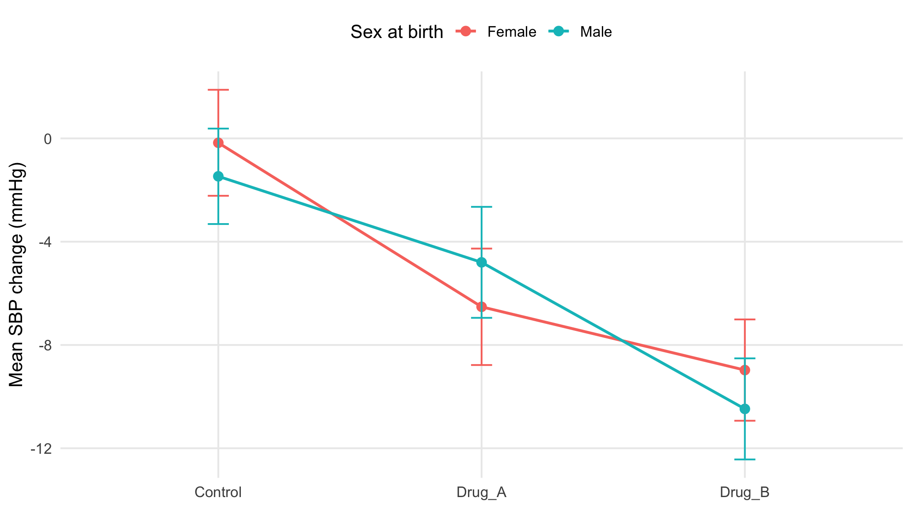

ANOVA and regression are two expressions of the same linear-model framework. ANOVA is most convenient when explanatory variables are categorical; regression notation becomes more natural when continuous covariates, interactions, and adjustment are central. The key statistical object is the model, not the function name used to fit it.
For \(k\) independent groups, one-way ANOVA tests whether all group means are equal:
\[ H_0:\mu_1=\mu_2=\cdots=\mu_k. \]
ANOVA separates the total variation into:
Each source of variation is converted to a mean square (MS):
\[ MS_{\text{between}}=\frac{SS_{\text{between}}}{df_{\text{between}}}, \qquad MS_{\text{within}}=\frac{SS_{\text{within}}}{df_{\text{within}}}. \]
The F statistic is
\[ F=\frac{MS_{\text{between}}}{MS_{\text{within}}}. \]
A large \(F\) means that the group means differ more than would be expected from the variation within the groups.
Change-score ANOVA is used here because it gives a clean demonstration of the classical one-way model. The preferred treatment-effect analysis for week-12 SBP is baseline-adjusted ANCOVA discussed later.
sbp_cc <- dat |> drop_na(sbp_change)
sbp_cc |> group_by(treatment_arm) |>
summarise(n=n(), mean=mean(sbp_change), sd=sd(sbp_change), median=median(sbp_change), .groups="drop") |>
kbl(digits=2, caption="SBP change by treatment arm")| treatment_arm | n | mean | sd | median |
|---|---|---|---|---|
| Control | 118 | -0.85 | 7.62 | -0.80 |
| Drug_A | 117 | -5.68 | 8.62 | -6.30 |
| Drug_B | 118 | -9.78 | 7.70 | -10.15 |
ggplot(sbp_cc, aes(treatment_arm, sbp_change, fill=treatment_arm)) +
geom_boxplot(width=.6, outlier.alpha=.35) +
scale_fill_manual(values=pal, guide="none") +
geom_hline(yintercept=0, linetype=2) +
labs(x=NULL, y="SBP change (mmHg)")
Figure 13.1: Distribution of week-12 minus baseline SBP by treatment arm.
The main assumptions of classical ANOVA are:
Independence is determined by the study design. Normality and equal variance are assessed using residual plots and comparisons of group spread.
sbp_aov <- aov(sbp_change~treatment_arm, data=sbp_cc);
summary(sbp_aov);
#> Df Sum Sq Mean Sq F value Pr(>F)
#> treatment_arm 2 4709 2355 36.9 0.0000000000000029 ***
#> Residuals 350 22340 64
#> ---
#> Signif. codes: 0 '***' 0.001 '**' 0.01 '*' 0.05 '.' 0.1 ' ' 1
car::leveneTest(sbp_change~treatment_arm, sbp_cc, center=median)
#> Levene's Test for Homogeneity of Variance (center = median)
#> Df F value Pr(>F)
#> group 2 0.58 0.56
#> 350
Figure 13.2: Residual diagnostics for the one-way SBP change model.
With balanced groups of roughly 120 participants, the F test is fairly robust to modest non-normality. What would be more concerning is a combination of severe skew/outliers, very unequal variances, and strongly unequal sample sizes.
effectsize::eta_squared(sbp_aov, partial=FALSE)
#> # Effect Size for ANOVA (Type I)
#>
#> Parameter | Eta2 | 95% CI
#> -----------------------------------
#> treatment_arm | 0.17 | [0.12, 1.00]
#>
#> - One-sided CIs: upper bound fixed at [1.00].Eta-squared (\(\eta^2\)) measures the overall effect size, while post hoc tests identify which treatment groups differ from each other. Treatment-specific mean differences show how large those differences are. Here, \(\eta^2=0.17\), meaning that about 17% of the variation in SBP change is associated with treatment group.
If ANOVA assumptions are met, we use Tukey’s HSD for all pairwise group comparisons. It controls the family-wise error rate and reports adjusted p-values with simultaneous 95% confidence intervals.
TukeyHSD(sbp_aov)
#> Tukey multiple comparisons of means
#> 95% family-wise confidence level
#>
#> Fit: aov(formula = sbp_change ~ treatment_arm, data = sbp_cc)
#>
#> $treatment_arm
#> diff lwr upr p adj
#> Drug_A-Control -4.831 -7.285 -2.378 0.0000
#> Drug_B-Control -8.924 -11.372 -6.476 0.0000
#> Drug_B-Drug_A -4.093 -6.546 -1.639 0.0003A large variance difference does not force the question to change from means to ranks. If the scientific estimand remains the difference in means, Welch ANOVA is designed for unequal group variances.
The biomarker change scores have visibly different spreads across treatment arms.
bio_change_cc <- dat |> drop_na(biomarker_change)
bio_change_cc |> group_by(treatment_arm) |>
summarise(n=n(), mean=mean(biomarker_change), sd=sd(biomarker_change), median=median(biomarker_change), .groups="drop") |> kbl(digits=2, caption="Biomarker change by treatment arm")| treatment_arm | n | mean | sd | median |
|---|---|---|---|---|
| Control | 118 | -2.71 | 9.68 | -4.25 |
| Drug_A | 116 | -14.94 | 11.93 | -14.25 |
| Drug_B | 115 | -28.73 | 17.41 | -27.60 |
For pairwise follow-up under unequal variances, Games–Howell is more coherent than Tukey HSD because it does not impose a common variance.
rstatix::games_howell_test(bio_change_cc, biomarker_change~treatment_arm) |>
dplyr::select(group1, group2, estimate, conf.low, conf.high, p.adj) |>
kbl(digits=3, caption="Games–Howell pairwise comparisons for biomarker change")| group1 | group2 | estimate | conf.low | conf.high | p.adj |
|---|---|---|---|---|---|
| Control | Drug_A | -12.23 | -15.58 | -8.873 | 0 |
| Control | Drug_B | -26.01 | -30.39 | -21.635 | 0 |
| Drug_A | Drug_B | -13.79 | -18.43 | -9.144 | 0 |
This chapter uses Welch ANOVA to compare mean biomarker change across treatment groups. Later, a more appropriate model adjusts for baseline biomarker and includes a baseline-by-treatment interaction, because the treatment effect depends on the baseline biomarker level.
CRP change is strongly skewed and not approximately normally distributed. When the goal is to compare the groups using a rank-based method rather than compare arithmetic means, the Kruskal–Wallis test is appropriate.
crp_change_cc <- dat |> drop_na(crp_change)
crp_change_cc |> group_by(treatment_arm) |>
summarise(n=n(), median=median(crp_change), IQR=IQR(crp_change), mean=mean(crp_change), .groups="drop") |>
kbl(digits=2, caption="CRP change by treatment arm")| treatment_arm | n | median | IQR | mean |
|---|---|---|---|---|
| Control | 113 | -0.05 | 0.88 | -0.03 |
| Drug_A | 111 | -0.35 | 0.90 | -0.49 |
| Drug_B | 112 | -0.68 | 1.17 | -0.93 |
kruskal.test(crp_change~treatment_arm, data=crp_change_cc)
#>
#> Kruskal-Wallis rank sum test
#>
#> data: crp_change by treatment_arm
#> Kruskal-Wallis chi-squared = 45, df = 2, p-value = 0.0000000002
# Post Hoc Test
rstatix::dunn_test(crp_change_cc, crp_change~treatment_arm, p.adjust.method="holm") |>
dplyr::select(group1, group2, statistic, p, p.adj) |>
kbl(digits=4, caption="Dunn pairwise comparisons with Holm adjustment")| group1 | group2 | statistic | p | p.adj |
|---|---|---|---|---|
| Control | Drug_A | -3.284 | 0.0010 | 0.0013 |
| Control | Drug_B | -6.724 | 0.0000 | 0.0000 |
| Drug_A | Drug_B | -3.417 | 0.0006 | 0.0013 |
The Kruskal–Wallis test first assesses whether CRP change differs across the treatment groups using ranks. If the global test is significant, Dunn’s test identifies which pairs of groups differ, with Holm adjustment for multiple comparisons.
This rank-based analysis is useful because CRP change is strongly skewed. However, it is not the preferred model for the main CRP treatment effect. Later, CRP will be modeled on the log scale with adjustment for baseline CRP. The treatment effect is reported as a ratio of adjusted geometric means by exponentiating the treatment coefficient from the log-scale model.
With two categorical factors, a factorial model can represent both main effects and their interaction:
\[ Y=\mu+A_i+B_j+(AB)_{ij}+\varepsilon. \]
The interaction asks whether the effect of one factor depends on the level of the other. When an interaction is scientifically or statistically important, marginal main effects should be interpreted cautiously.
A factorial model can test whether the effect of treatment on SBP change differs by sex:
sbp_factorial <- lm(sbp_change~treatment_arm*sex_at_birth, data=sbp_cc)
car::linearHypothesis(sbp_factorial, c("treatment_armDrug_A:sex_at_birthMale=0", "treatment_armDrug_B:sex_at_birthMale=0"))
#>
#> Linear hypothesis test:
#> treatment_armDrug_A:sex_at_birthMale = 0
#> treatment_armDrug_B:sex_at_birthMale = 0
#>
#> Model 1: restricted model
#> Model 2: sbp_change ~ treatment_arm * sex_at_birth
#>
#> Res.Df RSS Df Sum of Sq F Pr(>F)
#> 1 349 22329
#> 2 347 22138 2 191 1.5 0.23The joint interaction test gives \(F=1.5\) and \(p=0.23\). There is therefore no strong evidence that the effect of treatment on SBP change differs by sex at birth.
interaction_means <- sbp_cc |>
group_by(treatment_arm, sex_at_birth) |>
summarise(mean=mean(sbp_change), se=sd(sbp_change)/sqrt(n()), .groups="drop")
ggplot(interaction_means, aes(treatment_arm, mean, colour=sex_at_birth, group=sex_at_birth)) +
geom_line(linewidth=.9) +
geom_point(size=2.6) +
geom_errorbar(aes(ymin=mean-1.96*se, ymax=mean+1.96*se), width=.08) +
labs(x=NULL, y="Mean SBP change (mmHg)", colour="Sex at birth")
Figure 13.3: Mean SBP change by treatment arm and sex at birth.
Parallel lines suggest that treatment has a similar effect in females and males. Here, the lines cross, suggesting possible differences by sex, but the interaction test is not significant (\(p=0.23\)). Therefore, there is no clear evidence that the treatment effect differs by sex.
If the interaction is not scientifically important and the data do not support appreciable effect modification, an additive model is easier to interpret.
The linear-model syntax generalizes directly:
sbp_additive <- lm(sbp_change~treatment_arm+sex_at_birth, data=sbp_cc);
car::Anova(sbp_additive, type=2)
#> Anova Table (Type II tests)
#>
#> Response: sbp_change
#> Sum Sq Df F value Pr(>F)
#> treatment_arm 4707 2 36.78 0.0000000000000032 ***
#> sex_at_birth 12 1 0.18 0.67
#> Residuals 22329 349
#> ---
#> Signif. codes: 0 '***' 0.001 '**' 0.01 '*' 0.05 '.' 0.1 ' ' 1A full three-factor interaction model can consume many degrees of freedom and produce difficult-to-interpret estimates. It should be fitted because a three-way effect-modification question is scientifically motivated, not because three categorical columns happen to be present.
Missing data can make group sizes unequal. When this happens, some ANOVA methods can give different results depending on the order in which treatment, sex, or other model terms are entered.
To avoid relying on term order, start with the scientific question and test that effect directly, such as the overall treatment effect or the treatment-by-sex interaction. Define the hypothesis first, then choose the model that matches it.